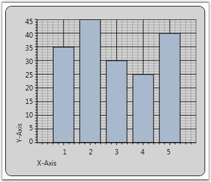

Chart for WPF provides support for Chart Axis Titles with the help of the attached property ChartAxis.Header. Its position can be adjusted by using the HeaderAlignment property of the ChartAxis class.
Table 140: ChartAxis Property
|
ChartAxis Property |
Description |
|
Header |
Gets/sets the title of the axis. |
|
HeaderAlignment |
Gets/sets the header alignment. The options included are as follows.
Far Center Near |
|
[XAML]
<syncfusion:ChartArea Name="area"> <syncfusion:ChartArea.PrimaryAxis> <syncfusion:ChartAxis Header="X-Axis" HeaderAlignment="Near" /> </syncfusion:ChartArea.PrimaryAxis> <syncfusion:ChartArea.SecondaryAxis> <syncfusion:ChartAxis Header="Y-Axis" HeaderAlignment="Far" /> </syncfusion:ChartArea.SecondaryAxis> <syncfusion:ChartSeries Name="series" Data=" 1 35 2 45 3 30 4 25 5 40" /> </syncfusion:ChartArea> |
|
[C#]
area.PrimaryAxis.Header = "X-Axis"; area.PrimaryAxis.HeaderAlignment = ChartAlignment.Near; area.SecondaryAxis.Header = "Y-Axis"; area.SecondaryAxis.HeaderAlignment = ChartAlignment.Far; |
The following image illustrates Chart with Axis HeaderAlignment set.

Figure 197:: X-axis HeaderAlignment = "Near"; Y-axis HeaderAlignment = "Far"
See Also